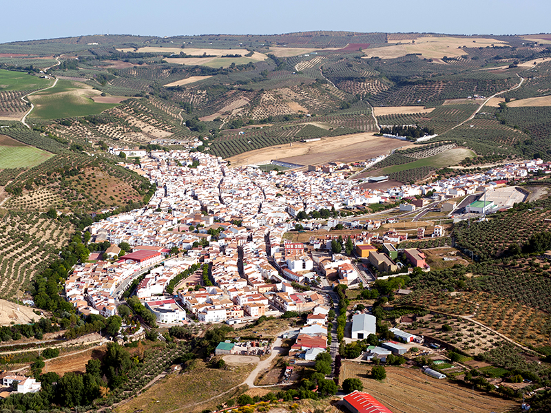

|  | Alcala del ValleGoogle Maps
Situada en el extremo nororiental de la provincia de Cádiz, Alcalá del Valle se encuentra enclavada en la zona occidental de la Serranía de Ronda, a cuya comarca natural pertenece, a 24 kilómetros de Ronda y a 155 kilómetros de Cádiz. Se ubica vecina a la provincia de Málaga, de la que formó parte hasta 1833, y a cuyo obispado perteneció hasta 1980, siendo el límite efectivo de la provincia de Cádiz con ésta. Esta población es la última de la conocida Ruta de los pueblos blancos.
|